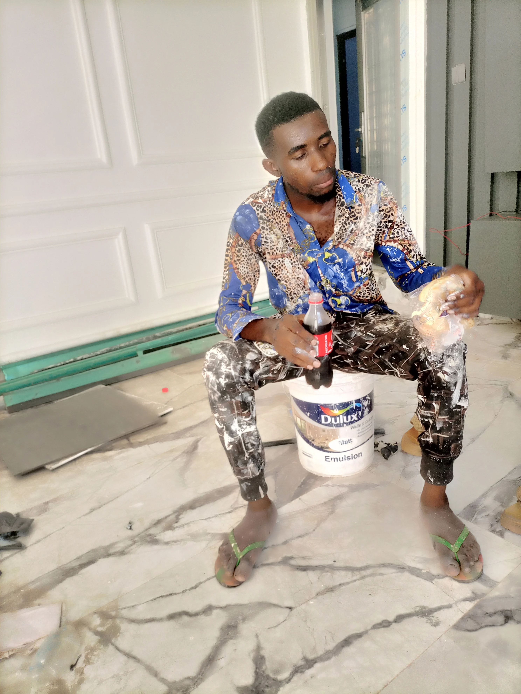
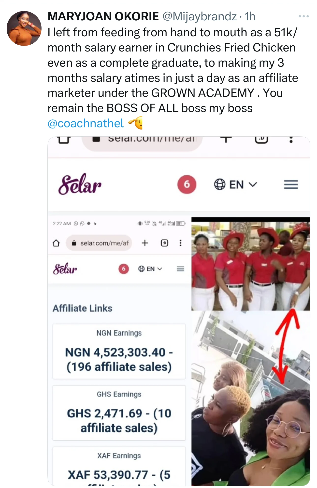
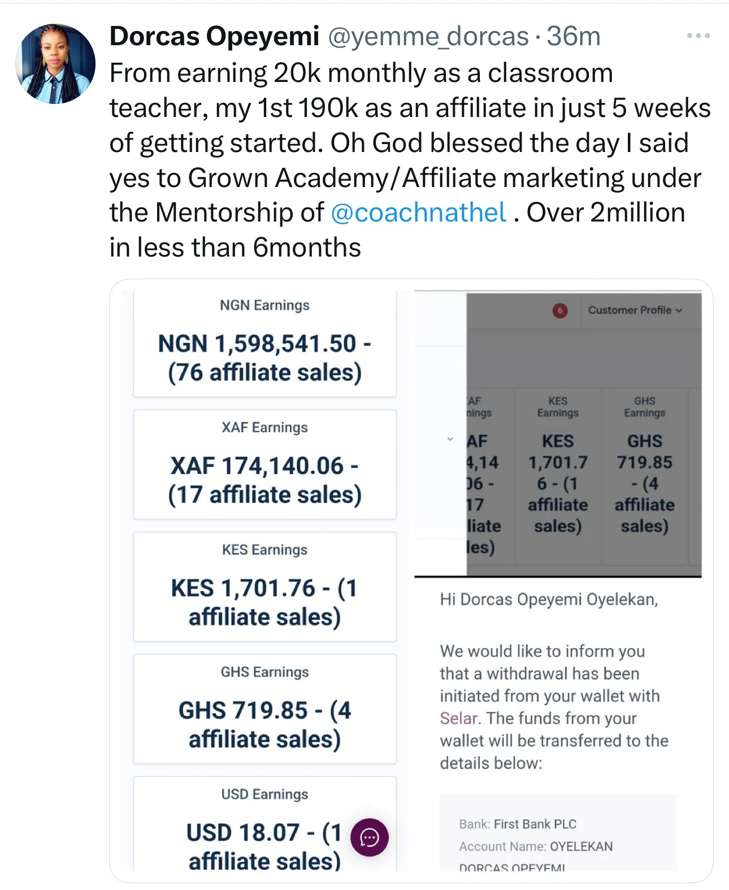
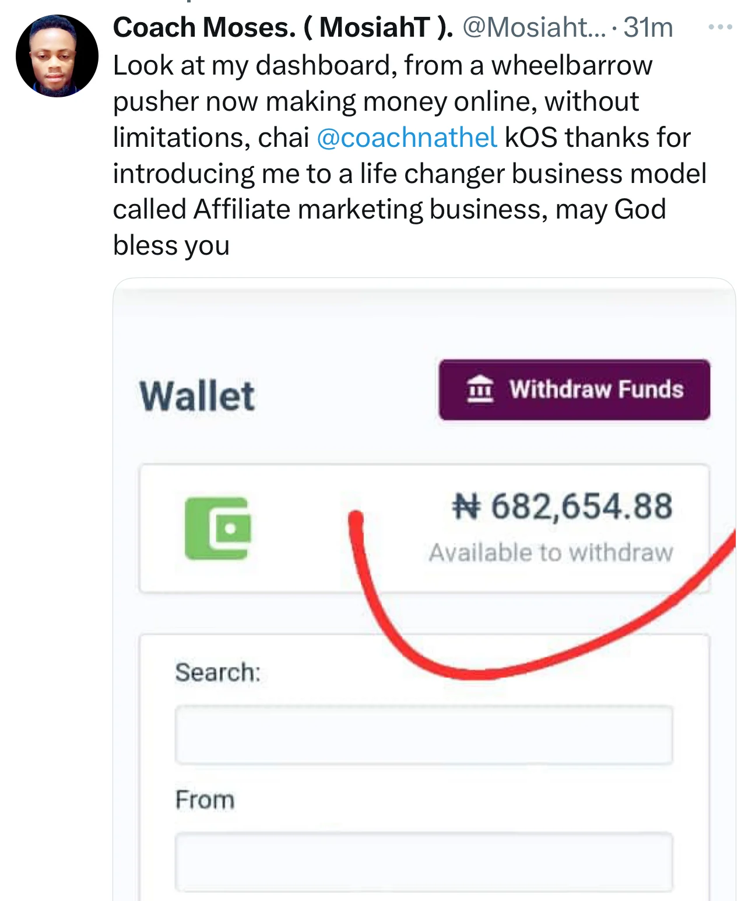
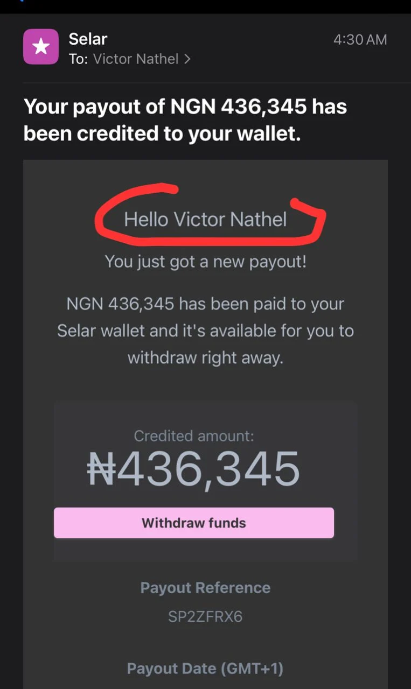
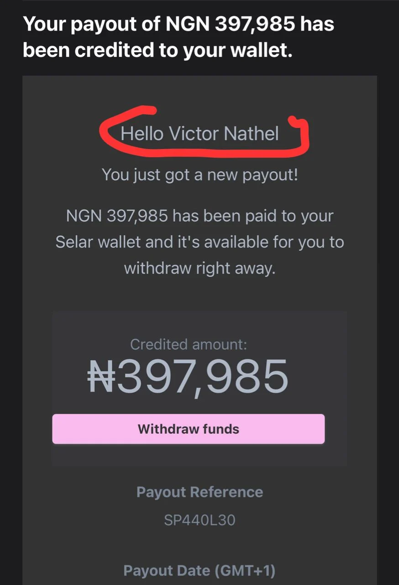
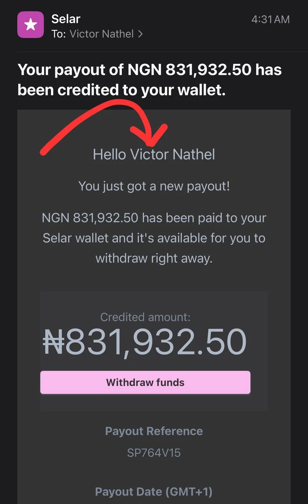
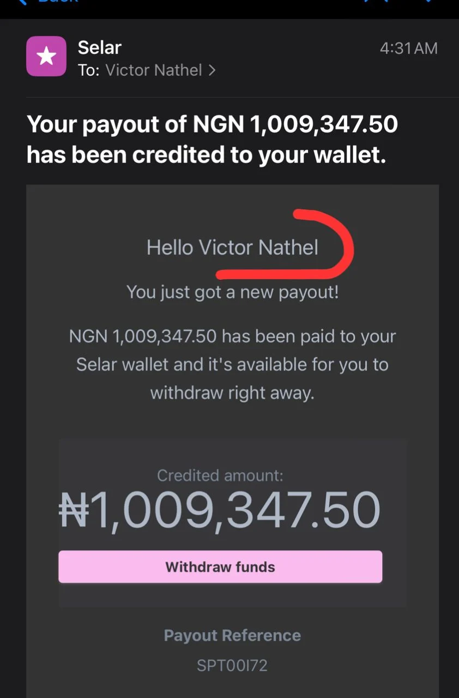
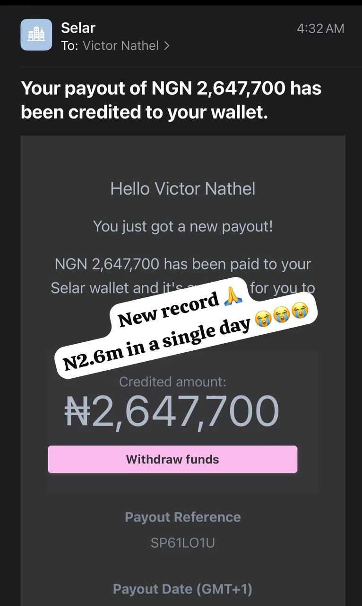

What Is Affiliate Marketing?
If you're new to making money online, affiliate marketing is one of the easiest business models to understand and get started with. The idea is simple: you promote products or services created by other people, and when someone purchases through your unique referral link, you earn a commission.
What caught my attention about affiliate marketing is that you don't need to create your own product, handle customer support, manage inventory, or worry about shipping. Your main focus is learning how to connect the right products with the right audience.
What You'll Learn In This Training
As I explored Victor Nathel's training, I found that it was designed to help complete beginners understand the affiliate marketing business from the ground up and develop skills that can be used to build a real online income stream.
Inside this training, you'll learn:
- How affiliate marketing works and why many beginners struggle to succeed
- How to identify profitable niches and products with strong demand
- How to attract visitors to your affiliate offers using both free and paid traffic methods
- How sales funnels work and how they help convert visitors into customers
- Growth and scaling strategies used by experienced affiliate marketers
- How to create professional graphics and high-converting landing pages
- How to build a strong social media presence and grow an audience online
Who Is Victor Nathel?
If you've spent time researching affiliate marketing in Nigeria, there's a good chance you've come across the name Victor Nathel. Curious about his story, I decided to learn more about his journey and how he built his online business.
Victor Nathel, whose full name is Nwosu Victor, is a Nigerian entrepreneur and the founder of Grown Academy. He is widely known for teaching affiliate marketing and sharing strategies that help beginners understand how online income systems work.
What I found most interesting wasn't where he is today, but where he started. Like many successful entrepreneurs, his journey wasn't easy. Before affiliate marketing, he faced financial struggles and worked different jobs while trying to improve his situation.
The images below show part of his early journey and the challenges he experienced before discovering affiliate marketing.
You can see what his life looked like back in 2021 when he was a struggling painter


One of the most inspiring parts of Victor Nathel's story is how affiliate marketing became the turning point that changed his life in 2022.
From what I've learned, he started his affiliate marketing journey with a loan of ₦60,000. It was a major risk because there were no guarantees, but he was willing to take a chance on learning a new skill and building a better future for himself.
The images below show the results of that decision and how one bold step eventually transformed his life and created opportunities he once only dreamed about.
He no longer go to work, as you can see his vacation pictures below when he traveled to Qatar and Turkey in different occasions and also visited Accra Ghana few months later

One thing I noticed while learning about Victor Nathel's journey is that affiliate marketing didn't just increase his income—it also gave him more freedom over his time and lifestyle. Through the business, he has been able to work more flexibly and travel to different places while continuing to grow his online income.
As his success grew, Victor began sharing what he had learned with friends, family members, and people close to him who were also looking for better opportunities.
What started as helping a few people eventually grew into a much bigger mission. More students began learning from him, applying the strategies, and sharing their own success stories.
As the results continued to spread, Victor's training programs gained more attention, leading to invitations to speak at events, seminars, churches, and other platforms where he could share his experience with larger audiences.
Today, Victor Nathel is known for helping thousands of people learn affiliate marketing and discover new ways to create income online.
One example that stood out to me is MaryJoan, whose story demonstrates how learning a new skill can completely change someone's financial situation.
Before discovering affiliate marketing, MaryJoan worked in a fast-food job earning a modest monthly income. Like many people, she wanted something more but wasn't sure where to begin.
According to her story, she eventually came across Victor Nathel's content online and became interested in learning more about affiliate marketing. Although she was initially cautious because of previous experiences she had encountered online, she took time to research, learn about the program, and make an informed decision.
After joining and applying what she learned, MaryJoan began seeing results. Her story has since become one of the most well-known success stories shared by Victor Nathel's students, showing what can happen when someone commits to learning and consistently takes action.
The result shown below highlights part of her journey and the progress she achieved after getting started.

This is the same person on previous picture after she became his student
Maryjoan’s testimony is just one amongst many

Should we talk about Dorcas Opeyemi who was a class teacher earning N20,000 monthly for compete 5 years and nothing to show for it? Look up and see her results for joining his academy
Almost N3 million naira in less than 5 months

Another story that caught my attention was Moses's. His journey is a reminder that opportunities can come from unexpected places and that a person's starting point does not determine their future.
From what I've learned, Moses faced significant challenges before discovering affiliate marketing. Yet after joining the academy and learning the skills being taught, his situation began to change, making his story one of the many inspiring testimonials shared by students.
What stands out to me is that these stories come from people with different backgrounds, experiences, and circumstances. Despite their differences, they all decided to take action and learn something new.
There are many more student success stories that could be shared, but these examples provide a glimpse into why so many people have become interested in Victor Nathel's training and the opportunities available through affiliate marketing.
Why This Course Is Different !!!
This isn’t just theory, it’s a complete practical guide
You’ll get:
Step-by-step video lessons
Plug-and-play funnel templates
Real-world examples and case studies
Access to a private support group
Tools & strategies used by top affiliates
You’ll Be Getting
- Your own affiliate funnel ready to start generating leads and sales
- A complete marketing system that runs on autopilot
- The knowledge to scale to $500-$750/month and beyond
💰 Join Today & Get Instant Access
🎁 LIMITED-TIME BONUS: Enroll now and get lifetime access, private community support, AND a personal coaching from Coach Nathel.
Here are some of my payouts from affiliate marketing and just imagine yourself making these figures working from home as an affiliate




One of the moments that really caught my attention while researching Victor Nathel's journey was when he reportedly gained widespread attention on X (formerly Twitter) after sharing a result of ₦2.6 million earned in a single day.
According to his story, this happened shortly after returning from a trip, and the achievement sparked conversations across social media as many people were surprised by the result.
Whether you're completely new to affiliate marketing or already familiar with online business, moments like these help explain why Victor Nathel's journey has attracted the interest of thousands of people looking to learn more about affiliate marketing and digital entrepreneurship.

This is the possibility of making money online, you can never tell what you might wake to meet because your earnings are random and not static
⚠ Don’t Wait… The Best Time to Start Was Yesterday. The Next Best Time Is NOW.
Your dream of earning online is closer than you think.
Let’s make it happen — together.
What You'll Learn Inside The Training
After researching the Grown Academy program, I discovered that students receive access to a complete affiliate marketing system designed to help beginners learn the skills needed to build an online business.
- A step-by-step guide showing how to start affiliate marketing from scratch, even if you have no previous experience.
- Training on how to identify profitable niches, select quality affiliate programs, and choose products that have strong sales potential.
- Lessons covering Facebook and Instagram advertising strategies, including how to attract potential customers and improve conversion rates.
- Practical design training that teaches students how to create professional promotional materials and marketing assets.
- Automation strategies that can help simplify daily tasks and make business operations more efficient.
- Access to templates, resources, and proven frameworks that students can use as a starting point for their own campaigns.
- Entry into the Grown Academy community where students can connect, learn, and interact with other members.
- Coaching, guidance, and mentorship from Victor Nathel, allowing students to learn directly from someone with real-world experience in affiliate marketing.
Students may also receive bonus materials focused on personal branding, webinar strategies, and sales communication techniques.
One thing I like about the program is that it attempts to cover multiple areas of online business rather than focusing on only one skill. Instead of learning a single strategy, students are introduced to marketing, content creation, advertising, branding, and business growth.
As with any skill, results depend on factors such as effort, consistency, experience, and market conditions. However, the goal of the training is to provide students with the knowledge, tools, and support needed to begin their affiliate marketing journey.
If you're interested in learning more about affiliate marketing and exploring the opportunities available through the Grown Academy, you can use the button below to get additional information.
Price goes back to N150,000 in